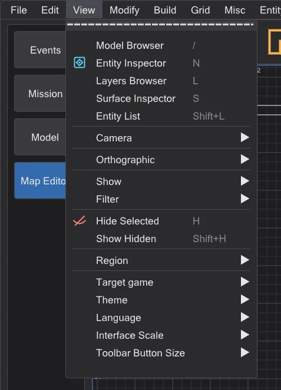
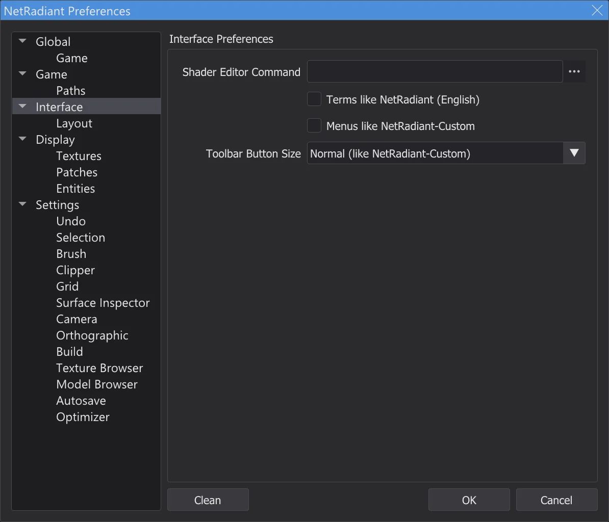
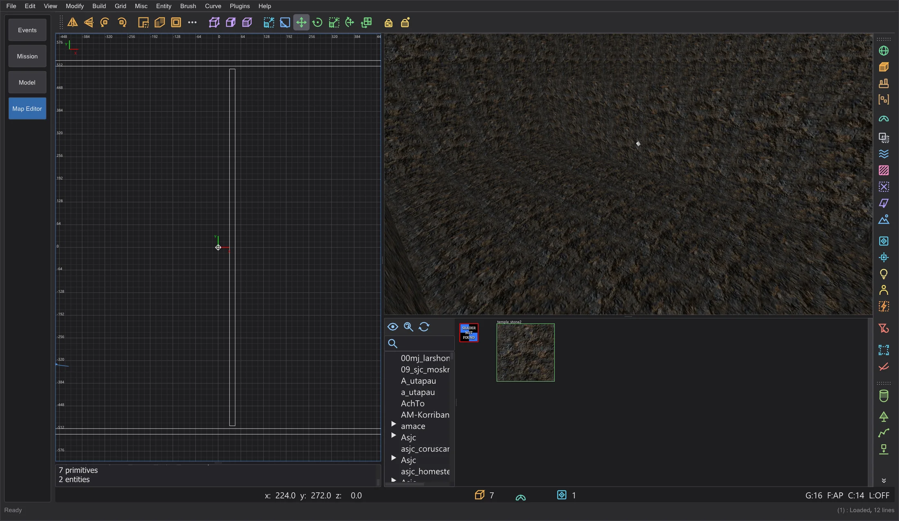

Map and scene
Map editor: differences to NetRadiant-Custom
The map editor follows NetRadiant-Custom 20260114 in look and handling. Known bugs of NetRadiant-Custom, Xonotic NetRadiant, GtkRadiant and q3map2 were checked one by one: what BehavEd does differently, and what stays as in NetRadiant-Custom on purpose.
Own handling (not in NetRadiant-Custom)#
- Menus in the style of BehavEd. The menu bar and all menus of the map editor look like the menus of the rest of the program. Entries, order, submenus, checks, shortcuts, the mnemonic keys and what each entry does are those of NetRadiant-Custom. Preferences > Interface > Menus like NetRadiant-Custom brings back the look of NetRadiant-Custom.
- Program settings in View. At the end of View: Target game, Theme, Language, Interface Scale and Toolbar Button Size - with the same effect as in the program's View menu. Language, theme and scaling also stay at the end of Misc.
- Toolbar button size. Small, Normal (like NetRadiant-Custom) or Large for the main, filter and plugin toolbars, under Preferences > Interface and in View > Toolbar Button Size. It applies at once and is saved; the views move up or down with the toolbars.
- Ctrl + mouse wheel does not scale the program inside the map editor: as in NetRadiant-Custom the wheel belongs to the views (zoom in 2D, move in the camera, scroll in the texture browser), also with Ctrl. The scaling is in View > Interface Scale.
- Window title. In the map editor the title shows the map and a
*when it has unsaved changes, as in NetRadiant-Custom.






Editor: fixed bugs#
| Report | NetRadiant-Custom | BehavEd |
|---|---|---|
| NRC#65 | After leaving vertex or edge mode the components stay selected; the next drag deforms the brush. | Leaving vertex or edge mode deselects its components. |
| NRC#302, GL#206 | Bevel and inverted bevel caps can create two degenerate patches, depending on the patch orientation. | The cap direction is chosen by size and shape, so every cap has a surface. |
| NRC#130 | A path with umlauts or other non-ASCII characters: the map does not open, the settings get damaged. | Editor and bhed_q3map2 handle any path (e.g. C:\Users\Jörg\...). |
| NRC#164 | Saving with a relative engine path (../../Academy/) triggers an assertion. | Paths are made absolute when they are set. |
| NRC#213 | AutoCaulk fails with "reading ..._ac.caulk failure" without a reason. | The console shows q3map2's output and the reason. |
| NRC#145 | With the Jedi Academy shaders AutoCaulk puts the non-solid system/nodraw on solid brushes and uses watercaulk, which does not exist there. | The names of system.shader in Jedi Academy and Jedi Outcast: nodraw_solid, caulk_water, caulk_lava, caulk_acid; a shader the game lacks is left out. AutoCaulk runs q3map2 with the game of the editor (-game ja/jk2). |
| NRC#261 | The Surface Inspector shows unnormalized brush-primitive shifts from other editors as the spinner limit (8192); an arrow or Enter then moves the texture. | Outside the spinner range the value is shown reduced by whole tiles - same alignment; the .map stays unchanged until a value is set. |
| NRC#279 | Caps only work for certain patch sizes; the console says so in English only. | Same limit (intended); below the English line a hint in the program language names the size each cap needs. |
| NRC master | Text errors fixed after tag 20260114 (bobToolz Door Builder "East - West", "Distance Multiplier"). | Taken over. |
Found during the check
- Choosing a texture in the texture browser now really sets it as the shader of new brushes (it was never stored).
- The state of the tag window was stored twice and got lost; the Clean button of the preferences had no function.
- Every menu entry, button, key and field was checked for its effect, and every command that changes the map undoes and redoes byte for byte.
bhed_q3map2: fixed bugs and deliberate output differences#
| Report | NetRadiant-Custom | BehavEd |
|---|---|---|
| Tester (Stage 7) | -convert (File > Open .bsp) writes hint, areaportal and skip brushes of Jedi Academy, Jedi Outcast and SoF2 maps as detail: in these games "structural" has no content flag, so the check for structural transparent brushes never applies. | The compile flags of the shaders decide as when building (q3map_structural / surfaceparm structural): such brushes come back structural, as in the source map. |
| GL#173 | Not deterministic: every build writes a different .bsp (shader pointers as sort keys, uninitialized lightmap coordinates, thread races in -vis and -light); the names of generated style shaders change with every build. | The BSP and light stages give the same result for the same map every time, with any number of threads equal to a 1-thread build; with one thread -light stays byte-identical to NRC. The vis stage is as in NRC: the same with one thread, with several threads its result may differ slightly from build to build. |
| NRC#101 | Dirtmapping (-dirty) darkens faces next to the sky as if the sky were a wall. | A dirt ray that leaves the map through the sky does not darken. |
| NRC#102, GL#154 | A map name with a dot (test.q3, foo_0.1) given without .map loses the part after the dot. | Only q3map2's own extensions are replaced (the editor always passes full paths anyway). |
| PR #316 | Memory errors: a brush side without a plane reads mapplanes[-1]; a deluxel reference without a deluxemap. | Fixed (checked with AddressSanitizer and UBSan over the regression maps and all decompiled maps of the three games); the output is unchanged. |
| PR #316 | Thin brush parts under one cubic unit are discarded; a crossing face narrower than 0.2 units vanishes; faces almost on another face's plane are not drawn; brushes with a small cross-section are not split, so part of them has no collision. | The five fixes of the pull request for this are taken over - each checked alone on the original maps of Jedi Academy and Jedi Outcast: no map got worse. Left out: dropping portals only when degenerate - with it 42 of 106 original maps leak (narrow gaps that NetRadiant-Custom closes). |
| ASan, UBSan | Crashes or undefined behaviour with broken map files (no entity at all, a quote as the last character, huge numbers) and when patches are subdivided for the lightmaps. | Found by running bhed_q3map2 under AddressSanitizer and UBSan over 300 deliberately broken maps and the original maps; fixed. A map without entities now gets a clear error. The output of valid maps stays byte for byte the same. |
| Decimal | (editor) Numbers from about 1e10 are cut when a map is saved; 1e20 becomes 1. | The value is kept (found with the new fuzzer for broken map files); ordinary coordinates are written exactly as before. |
A .bsp built by bhed_q3map2 therefore differs from one built by NetRadiant-Custom's q3map2 in the order of the surfaces and the packing of the lightmaps - not in the geometry. NetRadiant-Custom's q3map2 itself never writes the same file twice.
Preview as in the game#
| Report | NetRadiant-Custom | BehavEd |
|---|---|---|
| OpenJK#1358 | (engine) A misc_model_static whose cull point origin + (0 0 zoffset+1) lies in solid is never drawn. | The preview "as in the game" does not show it either, and the optimizer offers the zoffset that brings it back (Map editor: optimizer and limits). |
| JKHub | (game) Light styles: after entity edits, switchable lights (with a targetname) turn the wrong lights on and off - -onlyents numbers the styles anew, the lightmaps keep the old ones. | Update entities only refuses when the switchable lights differ from the original .bsp and asks for a full build (Map editor: opening and changing finished maps). |
Kept as in NetRadiant-Custom#
- Camera inside a brush (Stage 7): back faces are culled, so a brush you stand in disappears - unless its shader says
cull none,cull twosidedorcull disable(fog volumes, glass, water); then its walls stay visible from inside, as in NetRadiant-Custom (renderstate.cpp OpenGLShader::construct, shaders.cppcull). - NRC#281: Ctrl+K to several targets gives them the same targetname - as in NRC.
- NRC#132: a region build leaks when the region has no entities and the camera is inside a brush - as in NRC; BehavEd warns before such a build.
- NRC#48: external lightmaps together with light styles do not work in RBSP (Jedi Academy, Jedi Outcast) - a limit of the format; the build menu and the optimizer refuse the combination and explain the way around it.
- GL#189, NRC#144: surface lights under a floor shine through it because of the backsplash - as in NRC; the optimizer finds such lights (Map editor: optimizer and limits).